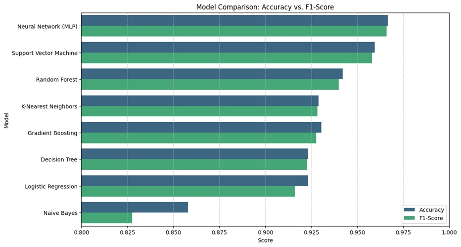
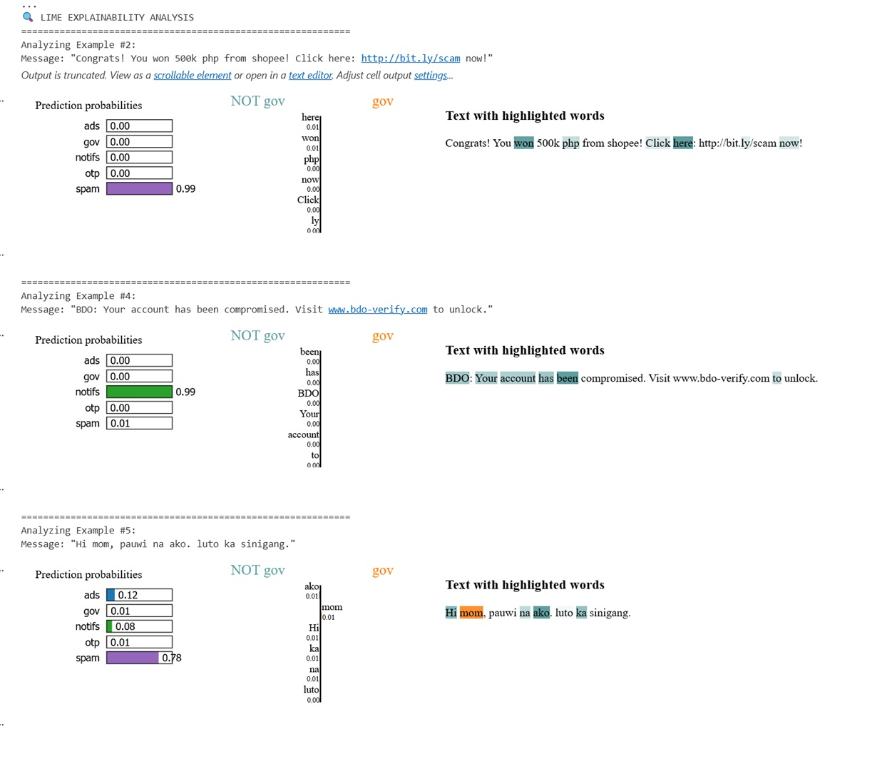

About the Project
Spam Detect PH is a Machine Learning-powered web application designed to help with the rising tide of SMS spam, scams, and smishing attacks in the Philippines. It uses traditional Neural Networks with a bonus modern GenAI feature to provide deep insights into local SMS threats.
🛠️ Technical Architecture
Frontend
- Vanilla JavaScript & HTML5
- OCR via Tesseract.js (Client-side, does not store Images)
- Hosted on Vercel
Backend
- Python (Flask API)
- Scikit-Learn (MLP Inference)
- Google Gemini 2.5 Flash (Generative AI)
- Hosted on Render
Note on Performance:
The free tier of Render "sleeps" after 15 minutes of inactivity. The first request to a sleeping server will experience a "cold start" delay of 30-50 seconds while the service wakes up. Subsequent requests are instantaneous.📊 Dataset Source
This model was trained using the Tagalog SMS Dataset provided by onzero0 on Kaggle. This dataset was crucial for ensuring the model understands the specific nuances of "Taglish" (Tagalog-English code-switching) commonly used in The Philippines.
🧠 Model Selection & Experiments
The core system runs on a Multi-Layer Perceptron (MLP). I selected this model after extensive benchmarking against 8 other algorithms (including Random Forest, SVM, and Naive Bayes) and advanced Transformers (DistilBERT).
Fig 1. Model Accuracy Leaderboard

Why not DistilBERT?
While I trained a DistilBERT (Transformer) model, I found that MLP (98.2%) offered comparable accuracy to DistilBERT (~95%) but with significantly faster inference times and lower computational cost, making it ideal for a free web deployment.
🔍 Explainable AI (LIME)
To ensure transparency ("White Box AI"), I utilized LIME (Local Interpretable Model-agnostic Explanations). This technique highlights exactly which words in a message triggered the spam detection.
Fig 2. LIME Analysis of Spam vs. Safe Messages

👨💻 Developer & Purpose
Developed by Lyndon R. as a Learning Project.
This project serves as a comprehensive learning experience in the AI / ML Development lifecycle - covering data cleaning, model training, API development, and cloud deployment. It aims to demonstrate a practical, scalable solution to a real-world cybersecurity problem.